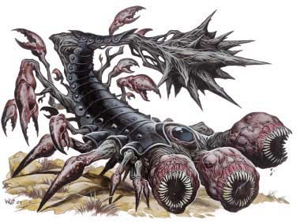

大型异怪

| 生命骰： | 7d8+49 (80 hp) |
| 先攻： | �C2 |
| 速度： | 40 英尺，攀爬 20 英尺 |
| 防御等级： | 22 (�C1 体型，�C2 敏捷，+15 天生)，接触 7，措手不及 22 |
| 基本攻击／擒抱： | +5/+14 |
| 攻击： | 挥击 +9 近战 |
| 全力攻击： | 挥击 +9 近战 与 6 爪抓 +7 近战 与 3 啮咬 +7 近战 |
| 伤害： | 挥击 3d6+5，爪抓 1d6+2，啮咬 1d8+2 |
| 面宽／触及： | 10 英尺/10 英尺 |
| 特殊攻击： | 毒素，震慑打击，破灭咆哮 |
| 特殊能力： | 黑暗视觉 60 英尺，快速医疗 5，反射粉碎，音波免疫，磐石稳固 |
| 豁免： | 强韧 +9，反射 +0，意志 +1 |
| 属性： | 力量 21，敏捷 7，体质 24，智力 15，感知 2，魅力 2 |
| 技能： | 攀爬 +23，聆听 +6，搜索 +12，侦察 +6 |
| 专长： | 精通击破武器，多重攻击，猛力攻击 |
| 地域： | 任意地表或地下 |
| 组织： | 单独，成对或集群 (3�C8) |
| 挑战等级： | 9 |
| 宝物： | ― |
| 阵营： | 通常中立邪恶 |
| 进化： | 8�C14 HD (大型)，15�C21 HD (超大型)，22�C28 HD (巨型)，29+ HD (超巨型) |
鲁卡尼尔是由考尔提（kaorti）法师创造的覆甲巨兽，其明确目的是摧毁考尔提不敢进入的区域。（本书前文已详述考尔提的相关内容。） 鲁卡尼尔形似覆甲的15英尺高无叶巨树，主干顶端延伸出一根粗壮枝条，末端呈布满尖刺的球状。无数细枝末端具抓握利爪。三张生有獠牙的巨口位于躯干底部，周围盘踞着纠缠的粗壮虫肢。一只无睑巨眼于其"正面"冷视前方。
据信考尔提将巨型蝎暴露于遥远国度（Far Realm）能量中创造了首批鲁卡尼尔。实际上考尔提对鲁卡尼尔的创造过于成功――其毁灭性令考尔提禁止它们进入聚居地。鲁卡尼尔在自然环境中存续的能力，使其成为守卫考尔提聚居地周边区域的理想守卫；鲁卡尼尔集群出现之处，几乎必有考尔提聚居地邻近。
鲁卡尼尔能说通用语。
鲁卡尼尔以破灭咆哮轰击装备最优之敌开启战斗，旋即突入近战范围，对触及内的所有目标发动猛攻。
毒素 (Poison) (Ex)：鲁卡尼尔的每次成功啮咬攻击均传递毒素（强韧 DC 20 则无效）。初始与后续伤害相同（2d6 敏捷）。
震慑打击 (Stunning Strike) (Ex)：被鲁卡尼尔挥击命中的目标须通过强韧豁免（DC 18），否则震慑 1d4 轮。
破灭咆哮 (Sundering Roar) (Su)：每 1d4 轮一次，鲁卡尼尔可任选一口部释放毁灭咆哮。60 英尺内所有生物须通过强韧豁免（DC 20），否则耳聋 2d6 轮。此外，鲁卡尼尔可指定范围内某一生物或物体作为破坏焦点，该目标承受 12d6 点音波伤害（反射 DC 20 减半）。若指定生物，其所着防具与所持武器亦受同等伤害。
快速医疗 (Fast Healing) (Ex)：鲁卡尼尔以每轮 5 点的速度恢复生命值。快速医疗无法恢复因饥饿、口渴或窒息损失的生命值，亦不能使鲁卡尼尔再生或接合残缺肢体。
反射粉碎 (Reflexive Sunder) (Ex)：鲁卡尼尔的覆甲在战斗中摩擦位移，发出如狂风摧木的刺耳锐响。以挥砍或穿刺近战武器命中鲁卡尼尔者，须通过反射豁免（DC 11），否则护甲位移将碾碎武器，造成 4d6+5 点伤害并震脱武器。若武器未被摧毁，则落于攻击者脚边。
磐石稳固 (Stability) (Ex)：鲁卡尼尔稳若磐石无法摔绊。对抗冲撞（bull rush）的力量检定获得 +20 稳固加值。
技能：鲁卡尼尔在攀爬检定上有 +8 种族加值，且即使受扰或受胁时亦可选择取 10。